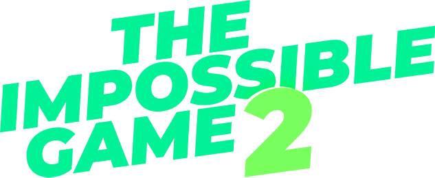

PLAY NOW!
NEW FEATURES!
Static and Falling Saws
Move-On-Switch
Bulk Edit
More Songs (you can even put YOUR OWN ONES!!)
Right-Facing Enemies
Speed-retaining Flags
"Classic" theme, for those who liked the original
The Impossible Game
Size Button
And much more!